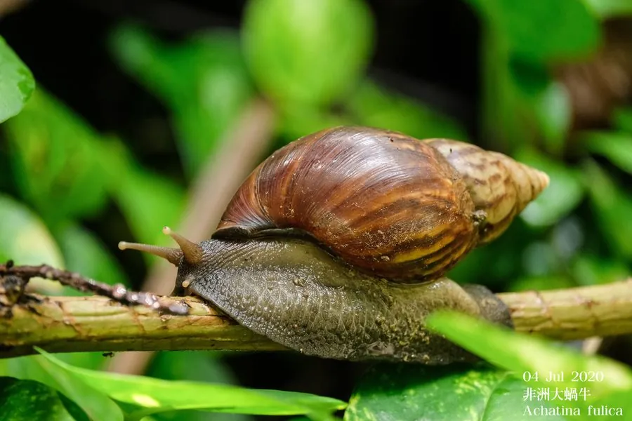

软体动物 · 动物界
褐云玛瑙螺 Lissachatina fulica

世界上体型最大的陆生蜗牛之一，壳表有褐色云状花纹，繁殖力强，被列为全球百大最具破坏力的外来入侵物种。
- 分类
- 门软体动物门纲腹足纲目柄眼目科玛瑙螺科属玛瑙螺属
- 栖息环境
- 潮湿的农田、菜地、花园、林缘和居民区，喜阴湿环境
- 地理分布
- 原产东非，现广布亚洲、美洲和太平洋岛屿，中国南方多地有分布
- 保护级别
- 暂无评估；中国未列入国家重点保护野生动物名录（已列为外来入侵物种）
物种志
褐云玛瑙螺的贝壳呈长圆锥形，壳质厚，壳表有褐色与黄褐色相间的云状斑纹，壳长一般 8–12 cm，最大可达 20 cm。软体呈灰褐色，头部有两对触角，后一对触角的末端长着眼睛。它用宽大的腹足爬行，爬过的地方会留下黏液痕迹，干燥时用厣封住壳口，进入休眠状态以度过不良环境。
褐云玛瑙螺原产东非，20 世纪被引入亚洲、美洲和太平洋岛屿，如今已成为全球分布最广的入侵蜗牛之一，中国南方多地也有分布。它夜行性、喜潮湿，雨后常大量出现，食性很杂，啃食蔬菜、花卉、农作物和腐殖质，食量大，是农业和园艺上的重要害虫。它雌雄同体，异体交配，每只成体每年可产卵数百至上千粒，卵白色、像小蚕豆，埋在松软的土中。它还是广州管圆线虫等多种寄生虫的中间宿主，生食或接触后不洗手可能被感染。褐云玛瑙螺被列入中国外来入侵物种名单，目前没有IUCN 的正式评估，中国也未将其列入国家重点保护野生动物名录。
形态与习性
- 食性杂食性，啃食蔬菜、花卉、农作物和腐殖质
- 壳长一般 8–12 cm，最大可达 20 cm
- 体重成体通常 100–250 g
- 繁殖雌雄同体，异体交配，每年可产卵数百至上千粒
- 危害多种寄生虫的中间宿主，也是农业害虫
- 寿命约 3–5 年
趣味知识
- 褐云玛瑙螺是广州管圆线虫的中间宿主，生食或接触后不洗手可能被感染。
- 它被世界自然保护联盟列入全球百大最具破坏力的外来入侵物种。
- 一只成体一年可产数百粒卵，卵像小白豆一样埋在松软的土里。